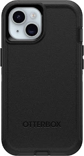
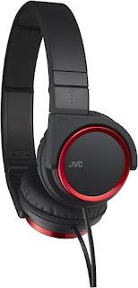

About this item
Compatible with iPhone 15, iPhone 14, and iPhone 13.
Multi-layer durable phone cases are made with 50% recycled plastic.
DROP+ 4X as many drops as military standard (MIL-STD-810G 516.6) works with wireless and MagSafe charging pads (no magnets in case)
Port covers block dust and dirt from jacks and ports and the included holster doubles as a kickstand
Includes OtterBox limited lifetime warranty (see website for details)
click to by
link

Brand
JVC
Color
Red
Form Factor
Over Ear
Connectivity
Technology Wired
Special
Feature foldable
click to by
link

About this item
Natural and accurate reference sound that reveals the truth in your music
Lifelike depth and realism from open-back earcups that allow sound waves to expand naturally, New polymer-blend transducer membrane offers highly-linear excursion for superb control
Wide soundstage from ergonomic acoustic refinement (e.a.r.) that tilts the drivers to the natural angle of your ears
Extended low-end reach with gratifying presence for clear bass performance
Connectivity technology: Wired
Connector type: 1/4-inch
Included components: Headphones, Cable, Owners Manual
click to by
link